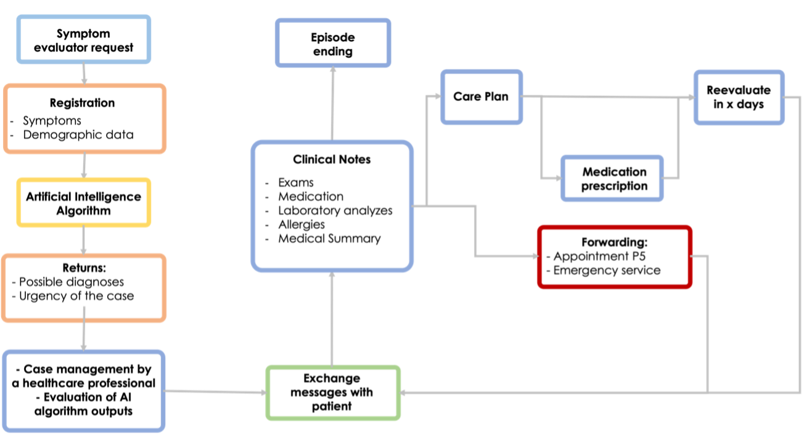
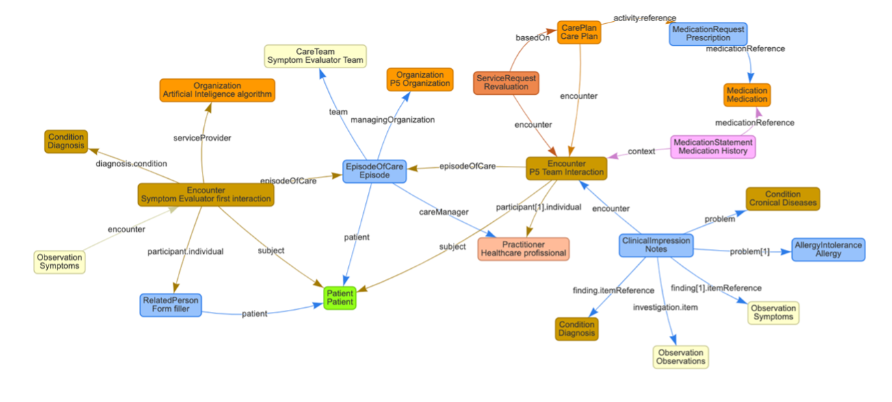

HL7 PT FHIR Implementation Guide: Example IG Release 1 | STU1
1.0.0 - STU1

HL7 PT FHIR Implementation Guide: Example IG Release 1 | STU1
1.0.0 - STU1

HL7 PT FHIR Implementation Guide: Example IG Release 1 | STU1, published by HL7 Portugal. This guide is not an authorized publication; it is the continuous build for version 1.0.0 built by the FHIR (HL7® FHIR® Standard) CI Build. This version is based on the current content of https://github.com/AnaCeciliaCoimbra/community-health-ig/tree/feature/translate and changes regularly. See the Directory of published versions
In the triage and counseling clinical application, the triage system is designed to receive input from a patient. This input is then transmitted to an artificial intelligence algorithm, which subsequently provides one or more potential diagnosis. During this initial encounter, the patient's symptoms and some demographic information are recorded.
Following that, a medical professional examines the case and evaluates the diagnosis that the AI system identified. Subsequently, the healthcare provider gets in touch with the patient to obtain more details, including frequent prescriptions, allergies, and any other relevant information required to address the issue. Following communication with the patient, a treatment plan is formulated, encompassing potential prescriptions or referrals to outpatient services, consultations, or even emergency services as deemed appropriate.
This workflow is described in Figure 1.
Symptom Evaluator Workflow

In Figure 2 is represented the mapping of FHIR resources for this case scenario. The image illustrates the integration and data flow between different entities and processes in a triage system that utilizes artificial intelligence.
FHIR Resources Workflow

In the symptom evaluator application, the triage system is designed to receive information from a patient and then process it by an artificial intelligence algorithm that provides one or more possible diagnoses. During this initial encounter, the patient’s symptoms and some demographic information are recorded as Observations and associated with a specific Encounter, referred to as the “Symptom Evaluator first interaction”.
The initial diagnosis, identified by the AI algorithm and represented as a Condition, is then reviewed by a healthcare professional, depicted on the map as a Healthcare Provider. This healthcare professional assesses the diagnosis provided by the AI system and contacts the patient to delve into the medical history, requesting additional information such as frequent prescriptions, allergies, and any other relevant details, which are recorded as Observations, Medication Statements and Allergies/Intolerances. Based on this interaction, represented as a second Encounter ("P5 Team Interaction"), the care manager develops a Care Plan, which may include medication prescriptions (Medication Request) and referrals to outpatient services, consultations, or emergency services, as appropriate for the situation. The FHIR mapping facilitates the management of care episodes, represented as Care Episode, encompassing the entire patient journey from the initial interaction to the follow-up of treatment, ensuring that clinical information is shared in a structured and interoperable manner across different health information systems.
It’s worth noting that all resources are associated with the resource Patient. This detail was omitted in the chart only to prevent it from becoming too confusing.